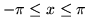

<!DOCTYPE HTML PUBLIC "-//W3C//DTD HTML 3.2 Final//EN">
<!-- Converted with jLaTeX2HTML 98.1p1 release (March 2nd, 1998) + JP patch 2.0 (March 16th, 1998)
patched by Kenshi Muto (mutou@three-a.co.jp), Three-A Systems,Co.,Ltd.
LaTeX2HTML 98.1p1 release (March 2nd, 1998)
originally by Nikos Drakos (nikos@cbl.leeds.ac.uk), CBLU, University of Leeds
* revised and updated by:  Marcus Hennecke, Ross Moore, Herb Swan
* with significant contributions from:
  Jens Lippmann, Marek Rouchal, Martin Wilck and others  -->
<HTML>
<HEAD>
<TITLE>sinh</TITLE>
<META NAME="description" CONTENT="sinh">
<META NAME="keywords" CONTENT="REFS">
<META NAME="resource-type" CONTENT="document">
<META NAME="distribution" CONTENT="global">
<META HTTP-EQUIV="Content-Type" CONTENT="text/html; charset=iso-2022-jp">
<LINK REL="STYLESHEET" HREF="REFS.css">
<LINK REL="next" HREF="node215.htm">
<LINK REL="previous" HREF="node213.htm">
<LINK REL="up" HREF="node4.htm">
<LINK REL="next" HREF="node215.htm">
</HEAD>
<BODY BGCOLOR=NavajoWhite>
<!-- Navigation Panel -->
<A NAME="tex2html3123"
 HREF="node215.htm">
</A> 
<A NAME="tex2html3120"
 HREF="node4.htm">
</A> 
<A NAME="tex2html3114"
 HREF="node213.htm">
</A> 
<A NAME="tex2html3122"
 HREF="node1.htm">
</A>  
<BR>
<STRONG> Next:</STRONG> <A NAME="tex2html3124"
 HREF="node215.htm">size</A>
<STRONG> Up:</STRONG> <A NAME="tex2html3121"
 HREF="node4.htm">$B%j%U%!%l%s%9%^%K%e%"%k(J</A>
<STRONG> Previous:</STRONG> <A NAME="tex2html3115"
 HREF="node213.htm">singval</A>
<BR>
<BR>
<!-- End of Navigation Panel -->

<H2><A NAME="SECTION0004210000000000000000">&#160;</A><A NAME="man_sinh">&#160;</A>
<BR>
sinh
</H2><FONT SIZE="-1"><FONT SIZE="-1"><FONT SIZE="-1"><FONT SIZE="-1"><FONT SIZE="-1"><FONT SIZE="-1"></FONT></FONT></FONT></FONT></FONT></FONT><DL COMPACT>

<DT>$B!ZL\E*![(J
<DD>sinh - $BAP6J(J($B@~(J)$B@589(J
<DT>$B!Z7A<0![(J
<DD><PRE>
y = sinh(x)                      Y = sinh(X)
   (Real   |Real|Complex) y;        Array Y;
   (Integer|Real|Complex) x;        Array X;
</PRE><FONT SIZE="-1"><DT>$B!Z>\:Y![(J
<DD>sinh(x)$B$O!$%9%+%i7?(J($B@0?t(J, $B<B?t(J, $BJ#AG?t(J) x $B$NAP6J(J($B@~(J)$B@589$r5a$a$k!#(J
$B3QEY$O%i%8%"%s$G7W;;$5$l$k!#(J
sinh(X)$B$O!$G[Ns(J X $B$N3F@.J,$NAP6J(J($B@~(J)$B@589$+$i$J$kG[Ns(J Y $B$r5a$a$k!#(J
Y $B$NBg$-$5$O(J X $B$NBg$-$5$HF1$8!#(J
<DT>$B!Z;;K!![(J
<DD></FONT><PRE>
i = (0,1);
sinh(z) = (exp(-z) - exp(z))/2;
</PRE><FONT SIZE="-1"><FONT SIZE="-1"><DT>$B!ZNcBj![(J
<DD></FONT></FONT><PRE>
&gt;&gt; y = sinh(0.5)
y = 0.521095
</PRE><FONT SIZE="-1"><FONT SIZE="-1"><FONT SIZE="-1">
$BHO0O(J </FONT></FONT></FONT>
<!-- MATH: $-\pi \leq x \leq \pi$ -->
<FONT SIZE="-1"><FONT SIZE="-1"><FONT SIZE="-1"> $B$N(Jsinh(x)$B$N%0%i%U$rI=<($9$k!#(J</FONT></FONT></FONT><PRE>
&gt;&gt; x = [-PI:0.05:PI];
&gt;&gt; mgplot(1, x, sinh(x), {"sinh(x)"});
</PRE><FONT SIZE="-1"><FONT SIZE="-1"><FONT SIZE="-1"><FONT SIZE="-1"><DT>$B!Z;2>H![(J
<DD></FONT></FONT></FONT></FONT>
<DIV><TT>sin(<A HREF="node210.htm#man_sin">2.211</A>), cosh(<A HREF="node40.htm#man_cosh">2.37</A>), tanh(<A HREF="node234.htm#man_tanh">2.235</A>), asinh(<A HREF="node17.htm#man_asinh">2.13</A>), exp(<A HREF="node62.htm#man_exp">2.61</A>)
<BR></TT></DIV><FONT SIZE="-1"><FONT SIZE="-1"><FONT SIZE="-1"><FONT SIZE="-1"><FONT SIZE="-1"></DL><FONT SIZE="-1"></FONT></FONT></FONT></FONT></FONT></FONT>
<BR><HR>
<ADDRESS>
Masanobu KOGA
$BJ?@.(J11$BG/(J10$B7n(J2$BF|(J
</ADDRESS>
</BODY>
</HTML>
